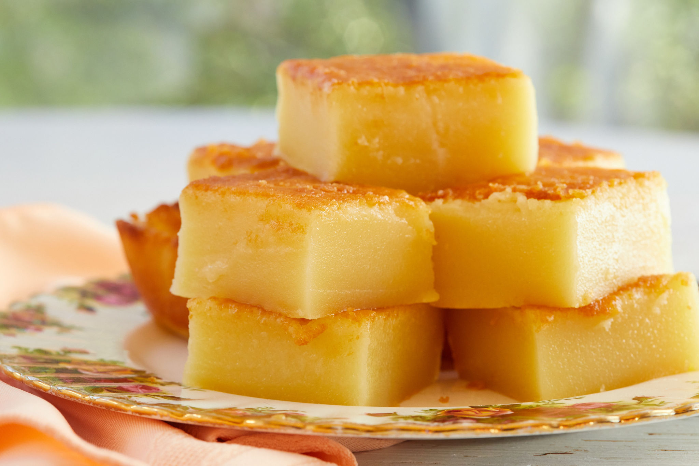

Butter Mochi Recipe

Description
Butter mochi is a popular dessert in Hawai'i. Mochiko flour gives it a pleasantly chewy texture, with the flavors of coconut and butter coming together into a delicious treat.
Ingredients
- 2 c sugar
- 4 eggs, beaten
- 1 can coconut milk
- 1 can evaporated milk
- 2 t vanilla
- 1/2 c butter, melted
- 1 lb mochiko flour
- 2 t baking powder
- 1/2 t salt
Steps
- Preheat the oven to 350°F. Grease a 13 x 9 pan.
- In a large bowl, whisk together sugar and eggs until combined.
- Whisk in the coconut milk, evaporated milk, vanilla, and melted butter.
- Combine the mochiko flour, baking powder and salt.
- Slowly whisk the dry ingredients into the wet until the mixture is smooth.
- Pour the mixture into the prepared pan, and tap the pan on the counter a few times to release any air bubbles. Bake for about one hour, until the top is golden brown.
- Cool completely before cutting.